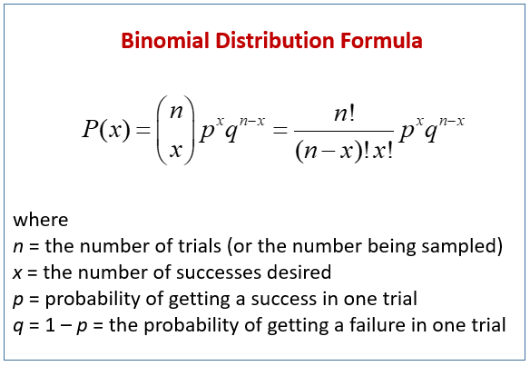
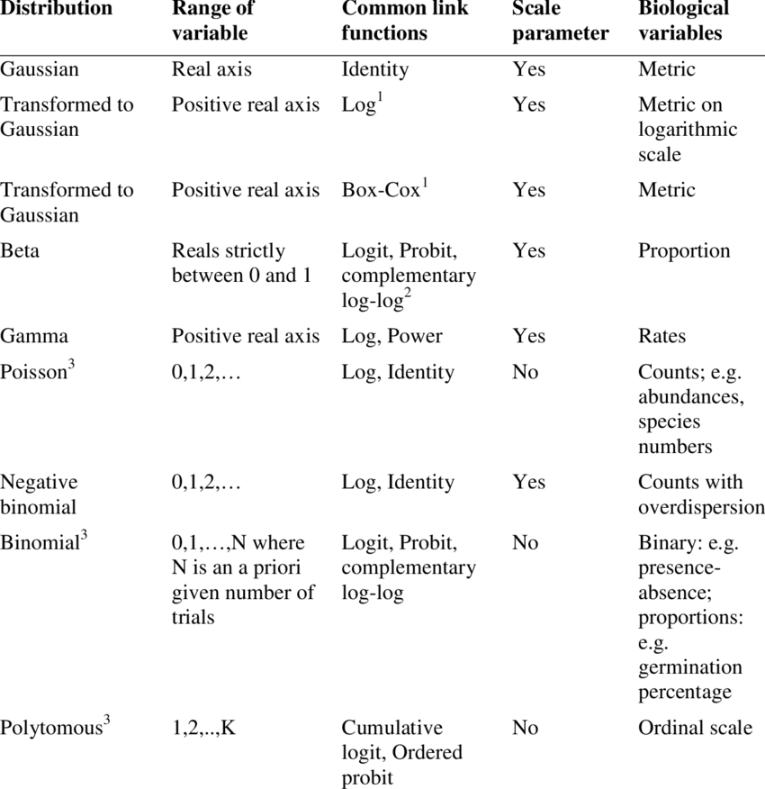
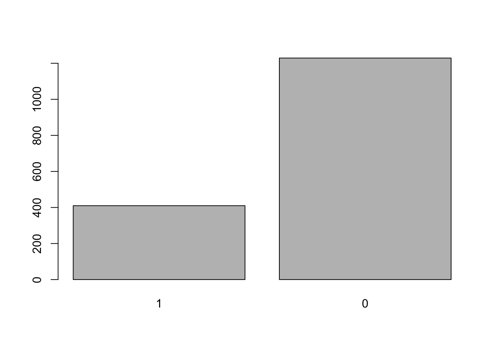
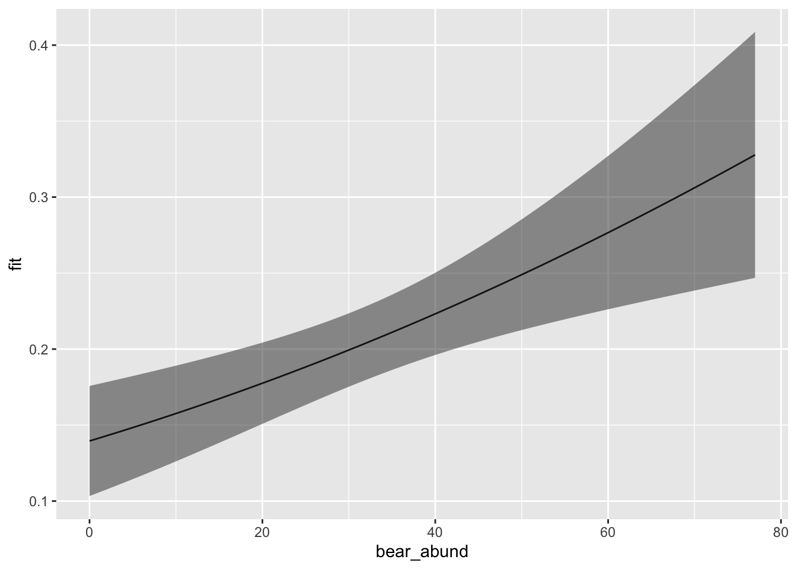
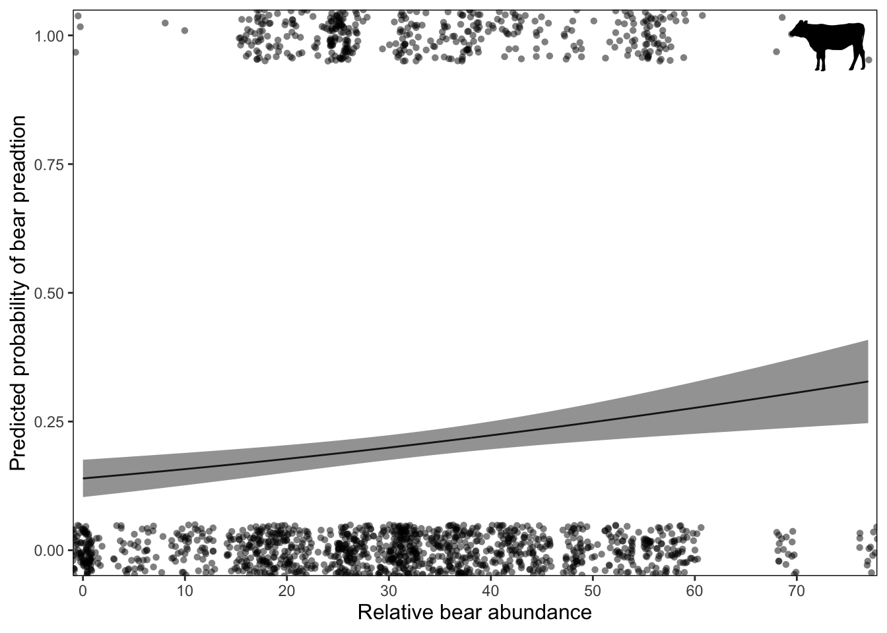

Statistical Modeling
Module 2: Generalized linear models (GLMs)
7 February 2025
Materials
Scripts
Click here to download the script! Save the script to the ‘scripts’’ folder in your project directory you set up in the previous module.
Load your script in RStudio. To do this, open RStudio and click the files window and select the scripts folder and then this script.
Cheat sheets
There are no cheat sheets specific to this module but don’t forget the ones you’ve already printed for previous modules!
Github repository
There is a Github repository that shows the full data formatting, statistical analysis, and graphics process for the publication associated with this data. For more information about the data check out the #README file.
Data
For this module we will work with the cows data from the brown bear conflict data set in Romania we worked with earlier. We’ve already done some data manipulation to this data set and saved it to the data/processed folder.
Read in the cows data from the data/raw folder.
# Data ----------------------
# Read in data for this module
cows <- read.csv('data/processed/cows.csv')
# check data structure
str(cows)## 'data.frame': 1620 obs. of 34 variables:
## $ damage : int 1 1 1 1 1 1 1 1 1 1 ...
## $ year : int 2008 2008 2008 2008 2008 2008 2008 2008 2009 2009 ...
## $ month : int 8 9 8 6 7 9 9 8 6 6 ...
## $ targetspp : chr "bovine" "bovine" "bovine" "bovine" ...
## $ point_x : num 533138 533138 554377 556053 556019 ...
## $ point_y : num 515800 515498 511973 504669 504694 ...
## $ bear_abund : int 38 38 56 25 25 41 69 25 43 34 ...
## $ landcover_2 : chr "Ag_land" "Open" "Art_surfaces" "Open" ...
## $ altitude : int 558 608 553 709 707 613 644 636 807 943 ...
## $ human_population: int 10 0 39 0 0 647 245 0 98 45 ...
## $ dist_to_forest : num 649.3 361.8 751.3 92.9 63.5 ...
## $ dist_to_town : num 613 843 0 1422 1390 ...
## $ livestock_killed: int 2 1 2 9 9 3 2 1 1 1 ...
## $ shannondivindex : num 1.082 0.935 1.411 1.555 1.555 ...
## $ prop_arable : num 55.33 9.11 48.63 7.7 7.7 ...
## $ prop_orchards : int 0 0 0 0 0 0 0 0 0 0 ...
## $ prop_pasture : num 20.7 44.5 0 35.7 35.7 ...
## $ prop_ag_mo : num 0 0 0 0 0 ...
## $ prop_seminatural: num 0 0 19.5 0 0 ...
## $ prop_deciduous : num 21.2 46.4 15.4 30.9 30.9 ...
## $ prop_coniferous : num 0 0 5.45 0 0 ...
## $ prop_mixedforest: num 0 0 0 8.66 8.66 ...
## $ prop_grassland : num 0 0 0 10.6 10.6 ...
## $ prop_for_regen : num 0 0 2.03 6.49 6.49 ...
## $ openhab_10k : num 0.685 0.802 -1.056 1.283 1.18 ...
## $ forest_10k : num -1.138 -0.985 -1.108 -0.209 -0.161 ...
## $ urban_10k : num 0.1467 0.0241 0.8297 -0.5364 -0.5364 ...
## $ heteroag_10k : num 0.685 0.802 -1.056 1.283 1.18 ...
## $ ag_10k : num 1.2092 0.968 1.7925 -0.082 -0.0859 ...
## $ shdi_10k : num 0.366 0.454 0.295 0.985 0.935 ...
## $ s.bear_abund : num -0.0792 -0.0792 0.6814 -0.2503 -0.2503 ...
## $ s.altitude : num -0.953 -0.813 -0.98 -0.41 -0.443 ...
## $ s.dist_to_town : num -0.828 -0.781 -1.086 -0.519 -0.519 ...
## $ s.dist_to_forest: num 0.227 0.0331 -0.2297 -0.3432 -0.3432 ...Basics of a GLM
A Generalized liner model (GLM) is a variation on a linear regression which allows the response variable to have a distribution other than the normal (Gaussian) distribution.
Steps of GLM
When applying a generalized linear model to your data follow the steps below
Choose the most appropriate distribution for the response variable. e.g., Gaussian, Poisson, negative binomial, gamma, binomial, etc.
Define the systematic component in terms of explanatory variables.
Specify the link between the mean of the response variable and the systematic part.
Check model assumptions (check for autocorrelation before running models).
Distributions
Some common non-normal distributions for wildlife data include…
Binomial distribution
The binomial distribution represents the probability of an outcome given only two options (e.g. 0s and 1s). Presence/absence data from remote camera traps is a great example of this.

Poisson distribution
The poisson distribution represents how many times an event is likely to occur over a specified period. Count data follow the poisson distribution.

Negative binomial distribution
The negative binomial distribution is also used for count data but when the data are also over dispersed. We can check for dispersion using a function in R after we run our model.
Which distribution to use?
Here is a helpful table from Thiele and Markussen 2012 you can use to determine which distribution you should use with your data.

Using some of the functions we covered in previous modules, take a look at the data and determine what distribution you would use given the response variable is damage.
# look at full data
# View(cows) # this is commented out because rMarkdown won't run the View() function
# check out info on response variable
summary(cows$damage)## Min. 1st Qu. Median Mean 3rd Qu. Max.
## 0.00 0.00 0.00 0.25 0.25 1.00# plot the response variable
hist(cows$damage)This histogram above should make it fairly clear that the binomial distribution would be a good fit for this data given the response variable contains 1s and 0s.
Assumptions of GLM
Independence
The data are independently distributed, i.e., cases are independent.
This assumption is checked in multiple ways. First, this is often related to how the data were collected, ensuring that each observation is unique and you do not have pseudo-replication in the data. Second, you need to check for autocorrelation between variables in your model. This can be done by running correlation test or plotting a correlation matrix with your explanatory variables.
Homogeneity of variance
When you have categorical variables or groups within your data you need to check that the variance within groups is equal for all groups. This is commonly done with Levene’s test (F test) which tests the null hypothesis that the variance is equal across groups. In order to not violate this assumption you want to result of this test to yield a p-value GREATER than 0.05.
Normality of residuals
While the dependent variable does NOT need to be normally distributed, because it assumes a different distribution specified in the model (e.g. binomial, Poisson, etc.) the residuals should be normally distributed without a skew or kurtosis (long tail).
The normality of the residuals can be assessed via some tests, like the Shapiro-Wilk, or the Kolmogorov-Smirnov tests, but is often best assessed visually via a qq-plot. (Note that this assumption is generally the least important of the set; if it is not met, your beta estimates will still be unbiased, but your p-values will be inaccurate.)
Influential observations
If you have a small data set or are concerned about outliers in your data. Assessing influence of individual observations may be useful. There are several ways to do this, first you can re-run your analysis without a particular data point and see how much your results and interpretation of said results changes; second, you can calculate Cook’s distance which provides and estimate of the influence of a data point.
With the exception of autocorrelation, GLM model assumptions are checked after you have done your analysis.
Run a GLM
Test for autocorrelation
The cows data has already been checked, cleaned, and formatted for analysis using many of the tools and techniques we covered in the intro to R modules so we can jump right into exploring potential explanatory variables and checking the assumption of independence.
First let’s make a subset of the data that only includes explanatory
variables we plan to use in models. Using
dplyr select() subset the cows data to only
include the following columns and assign this object to the environment
as cows_cor
- s.bear_abund
- s.dist_to_forest
- s.dist_to_town
- openhab_10k
- ag_10k
- forest_10k
- heteroag_10k
- urban_10k
- shdi_10k
Print the first few rows of data to make sure it worked
# Autocorrelation test --------------------
# first let's make a subset of the data that only includes explanatory variables we plan to use in models we will assign this to the environment as cows_cor
cows_cor <-
cows %>%
select(bear_abund,
s.dist_to_forest,
s.dist_to_town,
openhab_10k,
ag_10k,
heteroag_10k,
forest_10k,
urban_10k,
shdi_10k)
# check that this worked by looking at the first few rows of data
head(cows_cor)## bear_abund s.dist_to_forest s.dist_to_town openhab_10k ag_10k
## 1 38 0.22695278 -0.8280168 0.6848230 1.20915282
## 2 38 0.03307383 -0.7810998 0.8017716 0.96803235
## 3 56 -0.22973123 -1.0863413 -1.0556468 1.79250878
## 4 25 -0.34319626 -0.5186037 1.2833245 -0.08200842
## 5 25 -0.34319626 -0.5186037 1.1801346 -0.08589744
## 6 41 -0.02447104 -1.0863413 -0.1269376 0.52857086
## heteroag_10k forest_10k urban_10k shdi_10k
## 1 0.6848230 -1.1384193 0.1466808 0.3657387
## 2 0.8017716 -0.9850977 0.0240788 0.4539369
## 3 -1.0556468 -1.1083563 0.8297489 0.2952228
## 4 1.2833245 -0.2094707 -0.5363874 0.9854220
## 5 1.1801346 -0.1613699 -0.5363874 0.9347721
## 6 -0.1269376 -1.2406337 3.6671088 1.9510456Now we will create a correlation chart using the PerformanceAnalytics package that provides a correlation coefficient (r2) values for pairwise combinations of variables.
When looking at this matrix the plots on the diagonal provide histograms (distribution of data) for each variable and the variable name. Above the diagonal are the correlation coefficients for each pairwise combination of variables, and below the diagonal are correlation plots for each pariwsie combination of variables.
# correlation matrix - Pearson
chart.Correlation(cows_cor,
histogram = TRUE,
method = "pearson")
Do you notice anything about many of the relationships between variables?
They are non-linear. Pearson’s correlation coefficient assesses
linear relationships between variables, and since these are non-linear
our results are likely inaccurate. A better test to use would be
Spearman’s correlation coefficient. We can change the correlation
coefficient that is computed in the method = argument in
the chart.Correlation() function.
# there are a number of non-linear relationships so we should use the Spearman method
# correlation matrix - Spearman
chart.Correlation(cows_cor,
histogram = TRUE,
method = "spearman")Based on these results we should not include the follow variables together in a model (r2 > 0.7)
- dist_to_town & forest_10k
- dist_to_town & urban_10k
- dist_to_forest & forest_10k
- openhab_10k & heteroag_10k
- ag_10k & forest_10k
This process also serves as a great data check step. Do you notice anything else odd about the correlation matrix?
One of the r2 values is 1.00, this means that the data are perfectly correlated which should make you question this data as that happens if the data are exactly the same. Likely an error was made when extracting one of these variables in GIS and it was named as both variables. Luckily this isn’t the final version if this data from our manuscript. I noticed this issue during the analysis and we re-extracted the landscape variables in GIS to correct the issue. A great example of why it’s really important to look at your data again, and again, and again….
Model syntax
The syntax for a GLM in the lme4 package is as follows
# GLM syntax ----------------------
glm(response variable ~ explanatory variable 1 + explanatory variable 2,
data = your data,
family = chosen distribution)Notice the code to run a GLM is relatively simple, yet data analysis can take a very long time. When running a GLM in R, the most time intensive steps are formatting, visualizing, and checking your data for errors. The code for a model itself is only a few lines and will run very quickly for most data sets. That is why we spent so much time covering data formatting/manipulation and visualization; if you can become more efficient at these steps it will greatly reduce the amount of time needed for an analysis, reduce errors, and ensure that you can trust the results of your analysis.
Let’s run a global model (e.g., one with all non-correlated
variables) with the Romania cows data. Remember damage is our
response variable which we already determine fits with a
binomial distribution so our family should be set
family = binomial, and we already tested for
autocorrelation between our explanatory variables so we should ensure
none of the variables that were highly correlated are in the same
model.
# GLM ----------------------
# run a global GLM which includes all variables not highly correlated
cows_global <- glm(damage ~ bear_abund +
dist_to_forest +
dist_to_town +
openhab_10k +
ag_10k +
shdi_10k,
data = cows,
family = binomial)Test Assumptions
Before interpreting any results from our model we need to check that our model meets the assumptions of a GLM that we covered earlier.
Homogeneity of variance
We don’t have any factor variables (groups) in our model so we wouldn’t need to test this assumption but as an example we can set year as a factor and run Levene’s test on a model that predicts damage as a function of year and interpret the result.
# Test assumptions ----------------------
# Homogeneity of variance
cows <- cows %>%
# change year to a grouped variable (factor)
mutate(year = as.factor(year))
# run levene test
leveneTest(damage ~ year,
data = cows)## Levene's Test for Homogeneity of Variance (center = median)
## Df F value Pr(>F)
## group 8 3.0668 0.001967 **
## 1611
## ---
## Signif. codes: 0 '***' 0.001 '**' 0.01 '*' 0.05 '.' 0.1 ' ' 1With Levene’s test we are testing the null hypothesis that the groups have similar variance so we want a p > 0.05, but our value is 0.001 which would indicate we’ve violated this assumption.
Dispersion
We should ensure that our data is not over dispersed or we would want to use the negative binomial distribution. We can do this with some manual calculations using information from the model summary. We want to calculate a chi square approximation of residual deviance which equals (residual deviance / degrees of freedom)
# Dispersion
# test for over dispersion
summary(cows_global)##
## Call:
## glm(formula = damage ~ bear_abund + dist_to_forest + dist_to_town +
## openhab_10k + ag_10k + shdi_10k, family = binomial, data = cows)
##
## Deviance Residuals:
## Min 1Q Median 3Q Max
## -1.5286 -0.7965 -0.5511 0.2031 2.3067
##
## Coefficients:
## Estimate Std. Error z value Pr(>|z|)
## (Intercept) -1.513e+00 1.802e-01 -8.396 < 2e-16 ***
## bear_abund 1.430e-02 3.966e-03 3.605 0.000313 ***
## dist_to_forest -9.324e-04 2.078e-04 -4.488 7.19e-06 ***
## dist_to_town -2.369e-05 3.858e-05 -0.614 0.539241
## openhab_10k 5.497e-01 6.525e-02 8.425 < 2e-16 ***
## ag_10k 2.092e-01 1.198e-01 1.746 0.080736 .
## shdi_10k 3.704e-01 8.474e-02 4.371 1.24e-05 ***
## ---
## Signif. codes: 0 '***' 0.001 '**' 0.01 '*' 0.05 '.' 0.1 ' ' 1
##
## (Dispersion parameter for binomial family taken to be 1)
##
## Null deviance: 1822 on 1619 degrees of freedom
## Residual deviance: 1629 on 1613 degrees of freedom
## AIC: 1643
##
## Number of Fisher Scoring iterations: 6# calculate chi square approx. for residual deviance
1629/1613 # 1.0009 ## [1] 1.009919# we want a value ~1 so our data is okay
# value >1 is over dispersed
# value <1 is under dispersedInterpreting model output
Printing the summary of our model gives us a lot of useful information but it can be overwhelming at first if you don’t know what you are looking at so let’s walk through it.
# Results ----------------------
summary(cows_global)##
## Call:
## glm(formula = damage ~ bear_abund + dist_to_forest + dist_to_town +
## openhab_10k + ag_10k + shdi_10k, family = binomial, data = cows)
##
## Deviance Residuals:
## Min 1Q Median 3Q Max
## -1.5286 -0.7965 -0.5511 0.2031 2.3067
##
## Coefficients:
## Estimate Std. Error z value Pr(>|z|)
## (Intercept) -1.513e+00 1.802e-01 -8.396 < 2e-16 ***
## bear_abund 1.430e-02 3.966e-03 3.605 0.000313 ***
## dist_to_forest -9.324e-04 2.078e-04 -4.488 7.19e-06 ***
## dist_to_town -2.369e-05 3.858e-05 -0.614 0.539241
## openhab_10k 5.497e-01 6.525e-02 8.425 < 2e-16 ***
## ag_10k 2.092e-01 1.198e-01 1.746 0.080736 .
## shdi_10k 3.704e-01 8.474e-02 4.371 1.24e-05 ***
## ---
## Signif. codes: 0 '***' 0.001 '**' 0.01 '*' 0.05 '.' 0.1 ' ' 1
##
## (Dispersion parameter for binomial family taken to be 1)
##
## Null deviance: 1822 on 1619 degrees of freedom
## Residual deviance: 1629 on 1613 degrees of freedom
## AIC: 1643
##
## Number of Fisher Scoring iterations: 6The Call simply prints the model you’ve run so if you’re scrolling through multiple outputs you know which one you are looking at and which variables were included in that model

The coefficients provide information on direction and magnitude of effect for each variable in relation to your response variable. If the value is positive then that variable has a positive relationship with the response variable.

Odds ratios
To interpret the model coefficients we exponentiate them to get an
odds ratio which represents the odds of an outcome
occurring given a particular exposure (variable).The function for this
is exp()
# calculate odds ratio for coefficients
exp(coefficients(cows_global))## (Intercept) bear_abund dist_to_forest dist_to_town openhab_10k
## 0.2202315 1.0143998 0.9990680 0.9999763 1.7327761
## ag_10k shdi_10k
## 1.2326612 1.4482428The interpretation for odds ratios is that odds ratios above 1 indicate a positive association and odds below 1 indicate a negative association, and the value of the exponentiated coefficient represents the change in odds of the response outcome given a unit increase in the explanatory variable.
For values less than 1 you subtract them from 1 to get the percent change. For distance to town, the odds of bear predation (damage) to cows decreases by 1% for each meter increase in distance to town.
1 - 0.99 = 0.01 * 100 = 1%
For positive values you calculate a percentage directly from the decimal of the odds ratio or you can subtract 1 from the odds ratio. So fo open habitat (10k) the odds of bear predation to cows increases by 73% for each increase in the proportion of open habitat within the surrounding 10km2 area.
1.73 - 1 = 0.73 * 100 = 73%
Scaling
One issue with interpreting odds ratios with our current model is we can’t compare the relative importance of our variables that have different units. For example, is a 1% increase per increase of 1 bear (bear abundance) more or less than a 23% increase in proportion of agricultural habitat (ag_10k)?
To solve this issue we can scale the numeric variables in our data so that all our variables are unit-less and on the same scale. This allows us to calculate effect sizes and determine which variables have greatest influence.
To scale our data we can nest the scale ()
function inside our model.
# re-run scaled model
# scale variables inside the glm model to get effect sizes when looking at coefficients
cows_global <- glm(damage ~ scale(bear_abund) +
scale(dist_to_forest) +
scale(dist_to_town) +
# the rest of the variables were already scaled when extracted in GIS
openhab_10k +
ag_10k +
shdi_10k,
data = cows,
family = binomial)
summary(cows_global)##
## Call:
## glm(formula = damage ~ scale(bear_abund) + scale(dist_to_forest) +
## scale(dist_to_town) + openhab_10k + ag_10k + shdi_10k, family = binomial,
## data = cows)
##
## Deviance Residuals:
## Min 1Q Median 3Q Max
## -1.5286 -0.7965 -0.5511 0.2031 2.3067
##
## Coefficients:
## Estimate Std. Error z value Pr(>|z|)
## (Intercept) -1.48007 0.08118 -18.231 < 2e-16 ***
## scale(bear_abund) 0.23537 0.06530 3.605 0.000313 ***
## scale(dist_to_forest) -0.88574 0.19736 -4.488 7.19e-06 ***
## scale(dist_to_town) -0.05242 0.08539 -0.614 0.539241
## openhab_10k 0.54972 0.06525 8.425 < 2e-16 ***
## ag_10k 0.20918 0.11977 1.746 0.080736 .
## shdi_10k 0.37035 0.08474 4.371 1.24e-05 ***
## ---
## Signif. codes: 0 '***' 0.001 '**' 0.01 '*' 0.05 '.' 0.1 ' ' 1
##
## (Dispersion parameter for binomial family taken to be 1)
##
## Null deviance: 1822 on 1619 degrees of freedom
## Residual deviance: 1629 on 1613 degrees of freedom
## AIC: 1643
##
## Number of Fisher Scoring iterations: 6When you look at the model summary output you’ll notice the direction of effect (sign for the coefficient estimates -/+) and the p-values are the same, but the estimates themselves have changed, they all range between -1 and 1 now.
If we calculate odds ratios for the scaled coefficients we can now compare the magnitude of effect for different variables even though the original units of measurement were different.
# calculate odds ratio for scaled coefficients
exp(coefficients(cows_global))## (Intercept) scale(bear_abund) scale(dist_to_forest)
## 0.2276229 1.2653823 0.4124077
## scale(dist_to_town) openhab_10k ag_10k
## 0.9489265 1.7327761 1.2326612
## shdi_10k
## 1.4482428Now the interpretation is a bit less intuitive because we have to consider the probability of damage for each standard deviation increase in the explanatory variable rather than each unit increase, but we can tell that bear_abund has a greater effect size than ag_10k which we would not have been able to tell from the unscaled data.
Plot odds ratios
Plotting the odds ratios for each covariate in the model can be a very helpful way to visualize the model results.
The code below shows one way (myabe not the most elegant but it works) to extract the model coefficients and confidence intervals and put them into a data frame for plotting
model_odds <-
tidy(cows_global,
exponentiate = TRUE,
confint.int = TRUE) %>%
# bind the estiamtes with the confidence intervals from the model
cbind(exp(confint(cows_global))) %>%
# change format to a tibble so works nicely with ggplot
as.tibble() %>%
rename(lower = '2.5 %',
upper = '97.5 %') %>%
filter(term != '(Intercept)')Now let’s use ggplot to make a nice graphic of these
# specify data and mapping asesthetics
ggplot(data = model_odds,
aes(x = term,
y = estimate)) +
# add points for the odss
geom_point() +
# add errorbars for the confidence intervals
geom_errorbar(aes(ymin = lower,
ymax = upper),
linewidth = 0.5,
width = 0.4) +
geom_hline(yintercept = 1,
alpha = 0.5) +
# rename the x axis labels
scale_x_discrete(labels = c('Agriculture',
'Opoen habitat',
'Bear abundance',
'Distance to forest',
'Distance to town',
'SHDI')) +
# rename y axis title
ylab('Odds ratio') +
# flip x and y axis
coord_flip() +
# specify theme
theme_bw() +
# specify theme elements
theme(panel.grid = element_blank(),
axis.title.y = element_blank())
Predicted probabilities
Recall, that when we choose a distribution to use with our GLM we
also select a link function which maps the nonlinear relationship so
that the linear model can be fit. This transformation is applied to the
expected values so we have to use the proper inverse function to get
predicted probabilities based on our model. Since we used a
binomial distribution which uses the logit link
function or log odds transformation, to get probabilities from our model
we need to apply the inverse logit function. The
function for this in R is plogis().
# inverse logit of coefficients to get probabilities
plogis(coefficients(cows_global))## (Intercept) scale(bear_abund) scale(dist_to_forest)
## 0.1854176 0.5585734 0.2919891
## scale(dist_to_town) openhab_10k ag_10k
## 0.4868970 0.6340717 0.5521040
## shdi_10k
## 0.5915438The predict() function is a more
efficient way to get predicted probabilities from you model. With this
function we can generate a new data frame that shows
the relationship between our explanatory variables and predicted
probabilities of our response variable to graph for easier
interpretation.
First we need to create a new data frame to add the predicted probabilities to. For each graph we want to generate we have to select one explanatory variable to plot (x-axis) which we will create set of values for that range from the minimum to the maximum value in our original data. The other variables are held constant at the mean to allow for accurate graphing and depiction of the relationship between the variable of interest and the response (predicted probability of our response)
# Newdata ----------------------
# first create a new data frame that includes all variables in the model (spelled EXACTLY the same) and where one variable (the one we want to graph) has a range from the min to max value in our data and the other variables are held constant at the mean value from the data.
# let's start with bear abundance
new_data_bear <- expand.grid(bear_abund = seq(min(cows$bear_abund),
max(cows$bear_abund),
by = 0.1),
dist_to_forest = mean(cows$dist_to_forest),
dist_to_town = mean(cows$dist_to_town),
openhab_10k = mean(cows$openhab_10k),
ag_10k = mean(cows$ag_10k),
shdi_10k = mean(cows$shdi_10k))
# look at what we created
head(new_data_bear)## bear_abund dist_to_forest dist_to_town openhab_10k ag_10k shdi_10k
## 1 0.0 388.0135 2340.985 0.1395047 -0.07957416 0.138227
## 2 0.1 388.0135 2340.985 0.1395047 -0.07957416 0.138227
## 3 0.2 388.0135 2340.985 0.1395047 -0.07957416 0.138227
## 4 0.3 388.0135 2340.985 0.1395047 -0.07957416 0.138227
## 5 0.4 388.0135 2340.985 0.1395047 -0.07957416 0.138227
## 6 0.5 388.0135 2340.985 0.1395047 -0.07957416 0.138227If you examine the new data frame we created you will see that bear
abundance is the only variable that changes in value and it increase by
0.1 which is what we set in the seq ()
function above.
Now we can add predicted probabilities to this new data frame using
the predict() function. To do this we need
to assign an object to the environment that provides a column (pred) in
our new data frame (new_data_bear) where we can fill the predicted
probabilities
# use predict function to get predicted probabilities of cow damage based on our model
new_data_bear$pred <- predict(cows_global,
type = 'response',
newdata = new_data_bear)
head(new_data_bear)## bear_abund dist_to_forest dist_to_town openhab_10k ag_10k shdi_10k
## 1 0.0 388.0135 2340.985 0.1395047 -0.07957416 0.138227
## 2 0.1 388.0135 2340.985 0.1395047 -0.07957416 0.138227
## 3 0.2 388.0135 2340.985 0.1395047 -0.07957416 0.138227
## 4 0.3 388.0135 2340.985 0.1395047 -0.07957416 0.138227
## 5 0.4 388.0135 2340.985 0.1395047 -0.07957416 0.138227
## 6 0.5 388.0135 2340.985 0.1395047 -0.07957416 0.138227
## pred
## 1 0.1395443
## 2 0.1397161
## 3 0.1398880
## 4 0.1400601
## 5 0.1402324
## 6 0.1404049With a little more coding and finagling of the data we can also get the standard error of the predicted values to include in our graph.
# use predict function to get predicted probabilities of cow damage based on our model
new_data_bear_pred <- predict(cows_global,
type = 'response',
se.fit = TRUE,
newdata = new_data_bear)
head(new_data_bear_pred)## $fit
## 1 2 3 4 5 6 7 8
## 0.1395443 0.1397161 0.1398880 0.1400601 0.1402324 0.1404049 0.1405775 0.1407503
## 9 10 11 12 13 14 15 16
## 0.1409233 0.1410965 0.1412699 0.1414434 0.1416171 0.1417910 0.1419650 0.1421393
## 17 18 19 20 21 22 23 24
## 0.1423137 0.1424883 0.1426631 0.1428380 0.1430132 0.1431885 0.1433640 0.1435397
## 25 26 27 28 29 30 31 32
## 0.1437155 0.1438915 0.1440678 0.1442442 0.1444207 0.1445975 0.1447744 0.1449515
## 33 34 35 36 37 38 39 40
## 0.1451288 0.1453063 0.1454839 0.1456617 0.1458397 0.1460179 0.1461963 0.1463749
## 41 42 43 44 45 46 47 48
## 0.1465536 0.1467325 0.1469116 0.1470909 0.1472703 0.1474500 0.1476298 0.1478098
## 49 50 51 52 53 54 55 56
## 0.1479900 0.1481703 0.1483509 0.1485316 0.1487125 0.1488936 0.1490748 0.1492563
## 57 58 59 60 61 62 63 64
## 0.1494379 0.1496197 0.1498017 0.1499839 0.1501663 0.1503488 0.1505316 0.1507145
## 65 66 67 68 69 70 71 72
## 0.1508976 0.1510808 0.1512643 0.1514479 0.1516318 0.1518158 0.1520000 0.1521843
## 73 74 75 76 77 78 79 80
## 0.1523689 0.1525536 0.1527386 0.1529237 0.1531090 0.1532944 0.1534801 0.1536659
## 81 82 83 84 85 86 87 88
## 0.1538520 0.1540382 0.1542246 0.1544112 0.1545979 0.1547849 0.1549720 0.1551593
## 89 90 91 92 93 94 95 96
## 0.1553469 0.1555345 0.1557224 0.1559105 0.1560987 0.1562872 0.1564758 0.1566646
## 97 98 99 100 101 102 103 104
## 0.1568536 0.1570427 0.1572321 0.1574216 0.1576114 0.1578013 0.1579914 0.1581817
## 105 106 107 108 109 110 111 112
## 0.1583721 0.1585628 0.1587536 0.1589447 0.1591359 0.1593273 0.1595189 0.1597107
## 113 114 115 116 117 118 119 120
## 0.1599026 0.1600948 0.1602871 0.1604796 0.1606724 0.1608653 0.1610583 0.1612516
## 121 122 123 124 125 126 127 128
## 0.1614451 0.1616387 0.1618326 0.1620266 0.1622208 0.1624152 0.1626098 0.1628045
## 129 130 131 132 133 134 135 136
## 0.1629995 0.1631947 0.1633900 0.1635855 0.1637812 0.1639771 0.1641732 0.1643695
## 137 138 139 140 141 142 143 144
## 0.1645660 0.1647626 0.1649595 0.1651565 0.1653537 0.1655511 0.1657487 0.1659465
## 145 146 147 148 149 150 151 152
## 0.1661445 0.1663427 0.1665410 0.1667396 0.1669383 0.1671372 0.1673363 0.1675356
## 153 154 155 156 157 158 159 160
## 0.1677351 0.1679348 0.1681347 0.1683348 0.1685350 0.1687354 0.1689361 0.1691369
## 161 162 163 164 165 166 167 168
## 0.1693379 0.1695391 0.1697405 0.1699421 0.1701439 0.1703458 0.1705480 0.1707503
## 169 170 171 172 173 174 175 176
## 0.1709529 0.1711556 0.1713585 0.1715616 0.1717649 0.1719684 0.1721721 0.1723759
## 177 178 179 180 181 182 183 184
## 0.1725800 0.1727842 0.1729887 0.1731933 0.1733981 0.1736032 0.1738084 0.1740138
## 185 186 187 188 189 190 191 192
## 0.1742194 0.1744251 0.1746311 0.1748373 0.1750436 0.1752502 0.1754569 0.1756639
## 193 194 195 196 197 198 199 200
## 0.1758710 0.1760783 0.1762858 0.1764935 0.1767014 0.1769095 0.1771178 0.1773263
## 201 202 203 204 205 206 207 208
## 0.1775349 0.1777438 0.1779528 0.1781621 0.1783715 0.1785811 0.1787910 0.1790010
## 209 210 211 212 213 214 215 216
## 0.1792112 0.1794216 0.1796322 0.1798429 0.1800539 0.1802651 0.1804765 0.1806880
## 217 218 219 220 221 222 223 224
## 0.1808998 0.1811117 0.1813238 0.1815362 0.1817487 0.1819614 0.1821743 0.1823874
## 225 226 227 228 229 230 231 232
## 0.1826007 0.1828142 0.1830279 0.1832418 0.1834559 0.1836701 0.1838846 0.1840992
## 233 234 235 236 237 238 239 240
## 0.1843141 0.1845291 0.1847444 0.1849598 0.1851754 0.1853912 0.1856073 0.1858235
## 241 242 243 244 245 246 247 248
## 0.1860399 0.1862565 0.1864733 0.1866902 0.1869074 0.1871248 0.1873424 0.1875601
## 249 250 251 252 253 254 255 256
## 0.1877781 0.1879962 0.1882146 0.1884331 0.1886519 0.1888708 0.1890899 0.1893092
## 257 258 259 260 261 262 263 264
## 0.1895288 0.1897485 0.1899684 0.1901885 0.1904088 0.1906293 0.1908499 0.1910708
## 265 266 267 268 269 270 271 272
## 0.1912919 0.1915132 0.1917346 0.1919563 0.1921782 0.1924002 0.1926225 0.1928449
## 273 274 275 276 277 278 279 280
## 0.1930676 0.1932904 0.1935134 0.1937366 0.1939601 0.1941837 0.1944075 0.1946315
## 281 282 283 284 285 286 287 288
## 0.1948557 0.1950801 0.1953047 0.1955295 0.1957545 0.1959797 0.1962050 0.1964306
## 289 290 291 292 293 294 295 296
## 0.1966564 0.1968824 0.1971085 0.1973349 0.1975614 0.1977882 0.1980151 0.1982423
## 297 298 299 300 301 302 303 304
## 0.1984696 0.1986971 0.1989249 0.1991528 0.1993809 0.1996092 0.1998378 0.2000665
## 305 306 307 308 309 310 311 312
## 0.2002954 0.2005245 0.2007538 0.2009833 0.2012130 0.2014429 0.2016730 0.2019032
## 313 314 315 316 317 318 319 320
## 0.2021337 0.2023644 0.2025953 0.2028263 0.2030576 0.2032891 0.2035207 0.2037526
## 321 322 323 324 325 326 327 328
## 0.2039846 0.2042169 0.2044493 0.2046819 0.2049148 0.2051478 0.2053810 0.2056145
## 329 330 331 332 333 334 335 336
## 0.2058481 0.2060819 0.2063159 0.2065501 0.2067845 0.2070191 0.2072540 0.2074890
## 337 338 339 340 341 342 343 344
## 0.2077241 0.2079595 0.2081951 0.2084309 0.2086669 0.2089031 0.2091394 0.2093760
## 345 346 347 348 349 350 351 352
## 0.2096128 0.2098498 0.2100869 0.2103243 0.2105618 0.2107996 0.2110375 0.2112757
## 353 354 355 356 357 358 359 360
## 0.2115140 0.2117526 0.2119913 0.2122302 0.2124694 0.2127087 0.2129482 0.2131879
## 361 362 363 364 365 366 367 368
## 0.2134278 0.2136679 0.2139083 0.2141488 0.2143895 0.2146304 0.2148715 0.2151127
## 369 370 371 372 373 374 375 376
## 0.2153542 0.2155959 0.2158378 0.2160799 0.2163222 0.2165646 0.2168073 0.2170502
## 377 378 379 380 381 382 383 384
## 0.2172932 0.2175365 0.2177799 0.2180236 0.2182674 0.2185115 0.2187557 0.2190002
## 385 386 387 388 389 390 391 392
## 0.2192448 0.2194896 0.2197347 0.2199799 0.2202253 0.2204709 0.2207167 0.2209627
## 393 394 395 396 397 398 399 400
## 0.2212089 0.2214553 0.2217019 0.2219487 0.2221957 0.2224429 0.2226903 0.2229379
## 401 402 403 404 405 406 407 408
## 0.2231856 0.2234336 0.2236818 0.2239301 0.2241787 0.2244275 0.2246764 0.2249256
## 409 410 411 412 413 414 415 416
## 0.2251749 0.2254245 0.2256742 0.2259241 0.2261742 0.2264246 0.2266751 0.2269258
## 417 418 419 420 421 422 423 424
## 0.2271767 0.2274278 0.2276791 0.2279306 0.2281823 0.2284342 0.2286863 0.2289386
## 425 426 427 428 429 430 431 432
## 0.2291911 0.2294437 0.2296966 0.2299497 0.2302029 0.2304564 0.2307100 0.2309639
## 433 434 435 436 437 438 439 440
## 0.2312179 0.2314722 0.2317266 0.2319812 0.2322360 0.2324911 0.2327463 0.2330017
## 441 442 443 444 445 446 447 448
## 0.2332573 0.2335131 0.2337691 0.2340253 0.2342816 0.2345382 0.2347950 0.2350520
## 449 450 451 452 453 454 455 456
## 0.2353091 0.2355665 0.2358240 0.2360818 0.2363397 0.2365979 0.2368562 0.2371147
## 457 458 459 460 461 462 463 464
## 0.2373734 0.2376323 0.2378914 0.2381507 0.2384102 0.2386699 0.2389298 0.2391899
## 465 466 467 468 469 470 471 472
## 0.2394502 0.2397106 0.2399713 0.2402321 0.2404932 0.2407544 0.2410159 0.2412775
## 473 474 475 476 477 478 479 480
## 0.2415393 0.2418013 0.2420635 0.2423260 0.2425885 0.2428513 0.2431143 0.2433775
## 481 482 483 484 485 486 487 488
## 0.2436409 0.2439044 0.2441682 0.2444321 0.2446963 0.2449606 0.2452251 0.2454899
## 489 490 491 492 493 494 495 496
## 0.2457548 0.2460199 0.2462852 0.2465507 0.2468164 0.2470822 0.2473483 0.2476146
## 497 498 499 500 501 502 503 504
## 0.2478810 0.2481477 0.2484145 0.2486815 0.2489487 0.2492162 0.2494838 0.2497516
## 505 506 507 508 509 510 511 512
## 0.2500195 0.2502877 0.2505561 0.2508247 0.2510934 0.2513624 0.2516315 0.2519008
## 513 514 515 516 517 518 519 520
## 0.2521703 0.2524400 0.2527099 0.2529800 0.2532503 0.2535208 0.2537915 0.2540623
## 521 522 523 524 525 526 527 528
## 0.2543334 0.2546046 0.2548760 0.2551476 0.2554194 0.2556914 0.2559636 0.2562360
## 529 530 531 532 533 534 535 536
## 0.2565086 0.2567813 0.2570543 0.2573274 0.2576007 0.2578743 0.2581480 0.2584219
## 537 538 539 540 541 542 543 544
## 0.2586959 0.2589702 0.2592447 0.2595193 0.2597942 0.2600692 0.2603444 0.2606198
## 545 546 547 548 549 550 551 552
## 0.2608954 0.2611712 0.2614472 0.2617233 0.2619997 0.2622762 0.2625529 0.2628298
## 553 554 555 556 557 558 559 560
## 0.2631069 0.2633842 0.2636617 0.2639394 0.2642172 0.2644953 0.2647735 0.2650519
## 561 562 563 564 565 566 567 568
## 0.2653305 0.2656093 0.2658883 0.2661674 0.2664468 0.2667263 0.2670060 0.2672859
## 569 570 571 572 573 574 575 576
## 0.2675660 0.2678463 0.2681268 0.2684074 0.2686882 0.2689693 0.2692505 0.2695319
## 577 578 579 580 581 582 583 584
## 0.2698134 0.2700952 0.2703772 0.2706593 0.2709416 0.2712241 0.2715068 0.2717897
## 585 586 587 588 589 590 591 592
## 0.2720728 0.2723560 0.2726394 0.2729230 0.2732068 0.2734908 0.2737750 0.2740593
## 593 594 595 596 597 598 599 600
## 0.2743439 0.2746286 0.2749135 0.2751986 0.2754838 0.2757693 0.2760549 0.2763407
## 601 602 603 604 605 606 607 608
## 0.2766267 0.2769129 0.2771993 0.2774858 0.2777726 0.2780595 0.2783466 0.2786338
## 609 610 611 612 613 614 615 616
## 0.2789213 0.2792089 0.2794968 0.2797848 0.2800729 0.2803613 0.2806498 0.2809386
## 617 618 619 620 621 622 623 624
## 0.2812275 0.2815166 0.2818058 0.2820953 0.2823849 0.2826747 0.2829647 0.2832549
## 625 626 627 628 629 630 631 632
## 0.2835452 0.2838358 0.2841265 0.2844174 0.2847084 0.2849997 0.2852911 0.2855827
## 633 634 635 636 637 638 639 640
## 0.2858745 0.2861665 0.2864586 0.2867509 0.2870434 0.2873361 0.2876290 0.2879220
## 641 642 643 644 645 646 647 648
## 0.2882152 0.2885086 0.2888022 0.2890959 0.2893898 0.2896839 0.2899782 0.2902727
## 649 650 651 652 653 654 655 656
## 0.2905673 0.2908621 0.2911571 0.2914522 0.2917476 0.2920431 0.2923388 0.2926346
## 657 658 659 660 661 662 663 664
## 0.2929307 0.2932269 0.2935233 0.2938198 0.2941166 0.2944135 0.2947106 0.2950078
## 665 666 667 668 669 670 671 672
## 0.2953053 0.2956029 0.2959006 0.2961986 0.2964967 0.2967950 0.2970935 0.2973922
## 673 674 675 676 677 678 679 680
## 0.2976910 0.2979900 0.2982892 0.2985885 0.2988880 0.2991877 0.2994876 0.2997876
## 681 682 683 684 685 686 687 688
## 0.3000878 0.3003882 0.3006887 0.3009894 0.3012903 0.3015914 0.3018926 0.3021940
## 689 690 691 692 693 694 695 696
## 0.3024956 0.3027973 0.3030992 0.3034013 0.3037036 0.3040060 0.3043086 0.3046113
## 697 698 699 700 701 702 703 704
## 0.3049143 0.3052174 0.3055206 0.3058241 0.3061277 0.3064314 0.3067354 0.3070395
## 705 706 707 708 709 710 711 712
## 0.3073438 0.3076482 0.3079528 0.3082576 0.3085626 0.3088677 0.3091729 0.3094784
## 713 714 715 716 717 718 719 720
## 0.3097840 0.3100898 0.3103957 0.3107018 0.3110081 0.3113146 0.3116212 0.3119280
## 721 722 723 724 725 726 727 728
## 0.3122349 0.3125420 0.3128493 0.3131567 0.3134643 0.3137721 0.3140800 0.3143881
## 729 730 731 732 733 734 735 736
## 0.3146963 0.3150047 0.3153133 0.3156221 0.3159310 0.3162400 0.3165493 0.3168586
## 737 738 739 740 741 742 743 744
## 0.3171682 0.3174779 0.3177878 0.3180978 0.3184080 0.3187184 0.3190289 0.3193396
## 745 746 747 748 749 750 751 752
## 0.3196504 0.3199614 0.3202726 0.3205839 0.3208954 0.3212071 0.3215189 0.3218308
## 753 754 755 756 757 758 759 760
## 0.3221430 0.3224552 0.3227677 0.3230803 0.3233930 0.3237059 0.3240190 0.3243322
## 761 762 763 764 765 766 767 768
## 0.3246456 0.3249592 0.3252729 0.3255867 0.3259007 0.3262149 0.3265292 0.3268437
## 769 770 771
## 0.3271583 0.3274731 0.3277881
##
## $se.fit
## 1 2 3 4 5 6 7
## 0.01848129 0.01845885 0.01843637 0.01841385 0.01839128 0.01836866 0.01834601
## 8 9 10 11 12 13 14
## 0.01832330 0.01830056 0.01827777 0.01825494 0.01823206 0.01820914 0.01818618
## 15 16 17 18 19 20 21
## 0.01816318 0.01814013 0.01811705 0.01809392 0.01807075 0.01804754 0.01802428
## 22 23 24 25 26 27 28
## 0.01800099 0.01797766 0.01795429 0.01793087 0.01790742 0.01788393 0.01786040
## 29 30 31 32 33 34 35
## 0.01783683 0.01781322 0.01778958 0.01776590 0.01774218 0.01771842 0.01769462
## 36 37 38 39 40 41 42
## 0.01767079 0.01764692 0.01762302 0.01759908 0.01757511 0.01755110 0.01752706
## 43 44 45 46 47 48 49
## 0.01750298 0.01747887 0.01745472 0.01743054 0.01740633 0.01738209 0.01735781
## 50 51 52 53 54 55 56
## 0.01733350 0.01730916 0.01728479 0.01726039 0.01723596 0.01721150 0.01718701
## 57 58 59 60 61 62 63
## 0.01716249 0.01713794 0.01711336 0.01708875 0.01706412 0.01703946 0.01701477
## 64 65 66 67 68 69 70
## 0.01699006 0.01696532 0.01694056 0.01691577 0.01689095 0.01686612 0.01684125
## 71 72 73 74 75 76 77
## 0.01681637 0.01679146 0.01676653 0.01674158 0.01671661 0.01669162 0.01666660
## 78 79 80 81 82 83 84
## 0.01664157 0.01661652 0.01659144 0.01656635 0.01654125 0.01651612 0.01649098
## 85 86 87 88 89 90 91
## 0.01646582 0.01644065 0.01641546 0.01639026 0.01636504 0.01633981 0.01631457
## 92 93 94 95 96 97 98
## 0.01628932 0.01626405 0.01623877 0.01621348 0.01618819 0.01616288 0.01613756
## 99 100 101 102 103 104 105
## 0.01611224 0.01608691 0.01606157 0.01603623 0.01601088 0.01598553 0.01596017
## 106 107 108 109 110 111 112
## 0.01593481 0.01590944 0.01588408 0.01585871 0.01583334 0.01580797 0.01578261
## 113 114 115 116 117 118 119
## 0.01575724 0.01573188 0.01570652 0.01568116 0.01565581 0.01563046 0.01560512
## 120 121 122 123 124 125 126
## 0.01557978 0.01555446 0.01552914 0.01550383 0.01547853 0.01545324 0.01542796
## 127 128 129 130 131 132 133
## 0.01540270 0.01537745 0.01535221 0.01532699 0.01530178 0.01527659 0.01525142
## 134 135 136 137 138 139 140
## 0.01522626 0.01520113 0.01517601 0.01515092 0.01512585 0.01510080 0.01507578
## 141 142 143 144 145 146 147
## 0.01505078 0.01502581 0.01500086 0.01497594 0.01495105 0.01492619 0.01490136
## 148 149 150 151 152 153 154
## 0.01487657 0.01485180 0.01482707 0.01480238 0.01477772 0.01475310 0.01472851
## 155 156 157 158 159 160 161
## 0.01470397 0.01467947 0.01465500 0.01463059 0.01460621 0.01458188 0.01455759
## 162 163 164 165 166 167 168
## 0.01453336 0.01450917 0.01448503 0.01446094 0.01443690 0.01441292 0.01438899
## 169 170 171 172 173 174 175
## 0.01436512 0.01434130 0.01431754 0.01429384 0.01427021 0.01424663 0.01422312
## 176 177 178 179 180 181 182
## 0.01419967 0.01417629 0.01415297 0.01412973 0.01410655 0.01408344 0.01406041
## 183 184 185 186 187 188 189
## 0.01403745 0.01401457 0.01399176 0.01396904 0.01394639 0.01392382 0.01390134
## 190 191 192 193 194 195 196
## 0.01387894 0.01385662 0.01383440 0.01381226 0.01379021 0.01376825 0.01374639
## 197 198 199 200 201 202 203
## 0.01372462 0.01370295 0.01368137 0.01365990 0.01363852 0.01361725 0.01359609
## 204 205 206 207 208 209 210
## 0.01357502 0.01355407 0.01353323 0.01351249 0.01349187 0.01347136 0.01345097
## 211 212 213 214 215 216 217
## 0.01343070 0.01341054 0.01339051 0.01337060 0.01335081 0.01333115 0.01331162
## 218 219 220 221 222 223 224
## 0.01329221 0.01327294 0.01325381 0.01323480 0.01321594 0.01319721 0.01317862
## 225 226 227 228 229 230 231
## 0.01316018 0.01314188 0.01312372 0.01310572 0.01308786 0.01307016 0.01305261
## 232 233 234 235 236 237 238
## 0.01303521 0.01301797 0.01300090 0.01298398 0.01296723 0.01295064 0.01293422
## 239 240 241 242 243 244 245
## 0.01291796 0.01290188 0.01288597 0.01287024 0.01285468 0.01283931 0.01282411
## 246 247 248 249 250 251 252
## 0.01280910 0.01279427 0.01277963 0.01276517 0.01275091 0.01273684 0.01272297
## 253 254 255 256 257 258 259
## 0.01270929 0.01269581 0.01268254 0.01266946 0.01265659 0.01264393 0.01263148
## 260 261 262 263 264 265 266
## 0.01261924 0.01260721 0.01259540 0.01258381 0.01257243 0.01256128 0.01255035
## 267 268 269 270 271 272 273
## 0.01253964 0.01252916 0.01251892 0.01250890 0.01249912 0.01248957 0.01248026
## 274 275 276 277 278 279 280
## 0.01247119 0.01246237 0.01245378 0.01244545 0.01243736 0.01242952 0.01242193
## 281 282 283 284 285 286 287
## 0.01241459 0.01240751 0.01240069 0.01239413 0.01238783 0.01238179 0.01237602
## 288 289 290 291 292 293 294
## 0.01237052 0.01236528 0.01236032 0.01235563 0.01235122 0.01234708 0.01234322
## 295 296 297 298 299 300 301
## 0.01233964 0.01233634 0.01233333 0.01233060 0.01232816 0.01232601 0.01232415
## 302 303 304 305 306 307 308
## 0.01232258 0.01232131 0.01232034 0.01231966 0.01231928 0.01231921 0.01231943
## 309 310 311 312 313 314 315
## 0.01231996 0.01232080 0.01232194 0.01232340 0.01232516 0.01232724 0.01232963
## 316 317 318 319 320 321 322
## 0.01233234 0.01233536 0.01233870 0.01234236 0.01234634 0.01235064 0.01235527
## 323 324 325 326 327 328 329
## 0.01236022 0.01236550 0.01237110 0.01237703 0.01238330 0.01238989 0.01239681
## 330 331 332 333 334 335 336
## 0.01240407 0.01241167 0.01241959 0.01242786 0.01243646 0.01244540 0.01245468
## 337 338 339 340 341 342 343
## 0.01246430 0.01247426 0.01248456 0.01249521 0.01250619 0.01251753 0.01252921
## 344 345 346 347 348 349 350
## 0.01254123 0.01255360 0.01256632 0.01257939 0.01259280 0.01260656 0.01262068
## 351 352 353 354 355 356 357
## 0.01263514 0.01264996 0.01266512 0.01268064 0.01269651 0.01271273 0.01272931
## 358 359 360 361 362 363 364
## 0.01274623 0.01276351 0.01278115 0.01279914 0.01281748 0.01283618 0.01285523
## 365 366 367 368 369 370 371
## 0.01287464 0.01289440 0.01291452 0.01293499 0.01295582 0.01297700 0.01299853
## 372 373 374 375 376 377 378
## 0.01302042 0.01304267 0.01306527 0.01308823 0.01311153 0.01313520 0.01315922
## 379 380 381 382 383 384 385
## 0.01318359 0.01320831 0.01323339 0.01325882 0.01328460 0.01331074 0.01333723
## 386 387 388 389 390 391 392
## 0.01336407 0.01339126 0.01341880 0.01344669 0.01347493 0.01350352 0.01353245
## 393 394 395 396 397 398 399
## 0.01356174 0.01359137 0.01362135 0.01365168 0.01368235 0.01371337 0.01374473
## 400 401 402 403 404 405 406
## 0.01377643 0.01380848 0.01384087 0.01387360 0.01390667 0.01394009 0.01397384
## 407 408 409 410 411 412 413
## 0.01400793 0.01404235 0.01407712 0.01411222 0.01414765 0.01418342 0.01421952
## 414 415 416 417 418 419 420
## 0.01425596 0.01429272 0.01432982 0.01436725 0.01440500 0.01444309 0.01448149
## 421 422 423 424 425 426 427
## 0.01452023 0.01455929 0.01459867 0.01463838 0.01467841 0.01471876 0.01475943
## 428 429 430 431 432 433 434
## 0.01480041 0.01484172 0.01488334 0.01492528 0.01496753 0.01501009 0.01505297
## 435 436 437 438 439 440 441
## 0.01509616 0.01513966 0.01518346 0.01522758 0.01527200 0.01531673 0.01536176
## 442 443 444 445 446 447 448
## 0.01540710 0.01545274 0.01549867 0.01554491 0.01559145 0.01563829 0.01568542
## 449 450 451 452 453 454 455
## 0.01573285 0.01578057 0.01582859 0.01587689 0.01592549 0.01597438 0.01602356
## 456 457 458 459 460 461 462
## 0.01607302 0.01612277 0.01617281 0.01622313 0.01627373 0.01632461 0.01637578
## 463 464 465 466 467 468 469
## 0.01642722 0.01647894 0.01653094 0.01658322 0.01663577 0.01668859 0.01674169
## 470 471 472 473 474 475 476
## 0.01679505 0.01684869 0.01690260 0.01695677 0.01701121 0.01706592 0.01712089
## 477 478 479 480 481 482 483
## 0.01717613 0.01723162 0.01728738 0.01734340 0.01739968 0.01745621 0.01751300
## 484 485 486 487 488 489 490
## 0.01757005 0.01762735 0.01768491 0.01774271 0.01780077 0.01785908 0.01791764
## 491 492 493 494 495 496 497
## 0.01797644 0.01803549 0.01809479 0.01815433 0.01821412 0.01827415 0.01833442
## 498 499 500 501 502 503 504
## 0.01839493 0.01845568 0.01851667 0.01857789 0.01863935 0.01870105 0.01876298
## 505 506 507 508 509 510 511
## 0.01882515 0.01888754 0.01895017 0.01901303 0.01907612 0.01913943 0.01920298
## 512 513 514 515 516 517 518
## 0.01926674 0.01933074 0.01939496 0.01945940 0.01952406 0.01958895 0.01965405
## 519 520 521 522 523 524 525
## 0.01971938 0.01978492 0.01985068 0.01991666 0.01998285 0.02004926 0.02011588
## 526 527 528 529 530 531 532
## 0.02018271 0.02024976 0.02031702 0.02038449 0.02045216 0.02052005 0.02058814
## 533 534 535 536 537 538 539
## 0.02065644 0.02072494 0.02079365 0.02086257 0.02093168 0.02100100 0.02107052
## 540 541 542 543 544 545 546
## 0.02114024 0.02121016 0.02128028 0.02135060 0.02142112 0.02149183 0.02156273
## 547 548 549 550 551 552 553
## 0.02163383 0.02170513 0.02177662 0.02184830 0.02192017 0.02199223 0.02206448
## 554 555 556 557 558 559 560
## 0.02213692 0.02220955 0.02228237 0.02235537 0.02242856 0.02250194 0.02257550
## 561 562 563 564 565 566 567
## 0.02264924 0.02272317 0.02279728 0.02287157 0.02294604 0.02302069 0.02309552
## 568 569 570 571 572 573 574
## 0.02317052 0.02324571 0.02332107 0.02339661 0.02347233 0.02354822 0.02362429
## 575 576 577 578 579 580 581
## 0.02370052 0.02377694 0.02385352 0.02393027 0.02400720 0.02408430 0.02416156
## 582 583 584 585 586 587 588
## 0.02423900 0.02431660 0.02439437 0.02447231 0.02455041 0.02462868 0.02470711
## 589 590 591 592 593 594 595
## 0.02478571 0.02486447 0.02494340 0.02502248 0.02510173 0.02518114 0.02526071
## 596 597 598 599 600 601 602
## 0.02534044 0.02542033 0.02550038 0.02558059 0.02566095 0.02574147 0.02582215
## 603 604 605 606 607 608 609
## 0.02590298 0.02598397 0.02606511 0.02614640 0.02622785 0.02630945 0.02639121
## 610 611 612 613 614 615 616
## 0.02647311 0.02655517 0.02663738 0.02671973 0.02680224 0.02688489 0.02696769
## 617 618 619 620 621 622 623
## 0.02705064 0.02713374 0.02721698 0.02730037 0.02738391 0.02746759 0.02755141
## 624 625 626 627 628 629 630
## 0.02763538 0.02771949 0.02780375 0.02788814 0.02797268 0.02805736 0.02814218
## 631 632 633 634 635 636 637
## 0.02822714 0.02831224 0.02839747 0.02848285 0.02856837 0.02865402 0.02873981
## 638 639 640 641 642 643 644
## 0.02882573 0.02891179 0.02899799 0.02908432 0.02917079 0.02925739 0.02934413
## 645 646 647 648 649 650 651
## 0.02943100 0.02951800 0.02960513 0.02969239 0.02977979 0.02986731 0.02995497
## 652 653 654 655 656 657 658
## 0.03004276 0.03013067 0.03021871 0.03030689 0.03039519 0.03048361 0.03057217
## 659 660 661 662 663 664 665
## 0.03066085 0.03074966 0.03083859 0.03092764 0.03101683 0.03110613 0.03119556
## 666 667 668 669 670 671 672
## 0.03128512 0.03137479 0.03146459 0.03155451 0.03164455 0.03173471 0.03182500
## 673 674 675 676 677 678 679
## 0.03191540 0.03200593 0.03209657 0.03218733 0.03227821 0.03236921 0.03246032
## 680 681 682 683 684 685 686
## 0.03255156 0.03264290 0.03273437 0.03282595 0.03291765 0.03300946 0.03310139
## 687 688 689 690 691 692 693
## 0.03319343 0.03328558 0.03337785 0.03347023 0.03356272 0.03365533 0.03374805
## 694 695 696 697 698 699 700
## 0.03384088 0.03393382 0.03402686 0.03412002 0.03421329 0.03430667 0.03440016
## 701 702 703 704 705 706 707
## 0.03449376 0.03458746 0.03468127 0.03477519 0.03486922 0.03496335 0.03505759
## 708 709 710 711 712 713 714
## 0.03515193 0.03524638 0.03534093 0.03543559 0.03553036 0.03562522 0.03572019
## 715 716 717 718 719 720 721
## 0.03581526 0.03591044 0.03600571 0.03610109 0.03619657 0.03629215 0.03638784
## 722 723 724 725 726 727 728
## 0.03648362 0.03657950 0.03667548 0.03677156 0.03686774 0.03696402 0.03706039
## 729 730 731 732 733 734 735
## 0.03715686 0.03725343 0.03735010 0.03744686 0.03754372 0.03764068 0.03773772
## 736 737 738 739 740 741 742
## 0.03783487 0.03793211 0.03802944 0.03812687 0.03822439 0.03832200 0.03841971
## 743 744 745 746 747 748 749
## 0.03851751 0.03861540 0.03871338 0.03881145 0.03890961 0.03900787 0.03910621
## 750 751 752 753 754 755 756
## 0.03920465 0.03930317 0.03940178 0.03950048 0.03959927 0.03969815 0.03979711
## 757 758 759 760 761 762 763
## 0.03989617 0.03999530 0.04009453 0.04019384 0.04029324 0.04039272 0.04049229
## 764 765 766 767 768 769 770
## 0.04059194 0.04069167 0.04079149 0.04089140 0.04099138 0.04109145 0.04119160
## 771
## 0.04129184
##
## $residual.scale
## [1] 1new_data_bear_pred <- cbind(new_data_bear,
new_data_bear_pred) %>%
# add column for lower and upper 95% CI using manual calculation from SE
mutate(lwr = fit - (1.96*se.fit),
upr = fit + (1.96*se.fit))
head(new_data_bear_pred)## bear_abund dist_to_forest dist_to_town openhab_10k ag_10k shdi_10k
## 1 0.0 388.0135 2340.985 0.1395047 -0.07957416 0.138227
## 2 0.1 388.0135 2340.985 0.1395047 -0.07957416 0.138227
## 3 0.2 388.0135 2340.985 0.1395047 -0.07957416 0.138227
## 4 0.3 388.0135 2340.985 0.1395047 -0.07957416 0.138227
## 5 0.4 388.0135 2340.985 0.1395047 -0.07957416 0.138227
## 6 0.5 388.0135 2340.985 0.1395047 -0.07957416 0.138227
## pred fit se.fit residual.scale lwr upr
## 1 0.1395443 0.1395443 0.01848129 1 0.1033210 0.1757676
## 2 0.1397161 0.1397161 0.01845885 1 0.1035367 0.1758954
## 3 0.1398880 0.1398880 0.01843637 1 0.1037527 0.1760233
## 4 0.1400601 0.1400601 0.01841385 1 0.1039690 0.1761513
## 5 0.1402324 0.1402324 0.01839128 1 0.1041855 0.1762793
## 6 0.1404049 0.1404049 0.01836866 1 0.1044023 0.1764075If we examine the new data frame again we can see there is an additional column of data at the end called pred which our the predicted probabilities from our model given each value for bear abundance and the mean values for all other variables.
Be careful when creating your new data frame if you don’t include all the variables in your model or spell a variable wrong when you go to use the predict funciton it will give you an error. Let’s go through a quick example of this so you know what to expect.
# generate new data with typo
new_data_bear_typo <- expand.grid(bear_abund = seq(min(cows$bear_abund),
max(cows$bear_abund),
by = 0.1),
dist_to_forest = mean(cows$dist_to_forest),
dist_to_town = mean(cows$dist_to_town),
open_hab10k = mean(cows$openhab_10k),
ag_10k = mean(cows$ag_10k),
shdi_10k = mean(cows$shdi_10k))
# look at what we created
head(new_data_bear_typo)## bear_abund dist_to_forest dist_to_town open_hab10k ag_10k shdi_10k
## 1 0.0 388.0135 2340.985 0.1395047 -0.07957416 0.138227
## 2 0.1 388.0135 2340.985 0.1395047 -0.07957416 0.138227
## 3 0.2 388.0135 2340.985 0.1395047 -0.07957416 0.138227
## 4 0.3 388.0135 2340.985 0.1395047 -0.07957416 0.138227
## 5 0.4 388.0135 2340.985 0.1395047 -0.07957416 0.138227
## 6 0.5 388.0135 2340.985 0.1395047 -0.07957416 0.138227Now try to add the predicted probabilities to your new data, what happens?
# add predicted probabilities to new data with typo
new_data_bear_typo$pred <- predict(cows_global,
type = 'response',
newdata = new_data_bear_typo)You get this error
“Error in eval(predvars, data, env) : object ‘openhab_10k’ not found’
If this happens while you are coding your first reaction should be to check your data, R says it can’t find openhab_10k so may sure your new data frame includes that variable which we did, but it was spelled incorrectly the ’_’ was before ‘hab’ instead of after. A simple fix but new R users often get tripped up by errors because they immediately freak out, instead read the error, make sure you understand what the issue is, and go back to the previous step in your code to see if you can fix the mistake.
This is also why it’s important to keep your code clean, code in steps, and check your progress as you go rather than trying to type everything out and run a bunch of code at once, it’s much harder to find an error then.
Graph predictions
Now that we have predicted probabilities from our model for one of our variables we can graph these predictions to aid in interpreting and conveying our results.
# Graphs ----------------------
# create graph with predicted prob x bear abundance
ggplot(data = new_data_bear_pred, aes(x = bear_abund, y = fit)) +
# add line for predicted prob
geom_line() +
# add error bar
geom_ribbon(aes(ymin = lwr,
ymax = upr),
alpha = 0.5) # changes opacity so you can see the main line
Now we have a graphical representation of the relationship between bear abundance and the probability of bear predation on cows.
For practice, make this graph look nicer by
- add raw data to plot - making more
informative axis labels
- expanding the y-axis from 0 to 1
- adding ticks on the x-axis at intervals of 10
- removing the grey background - add border to graph
- remove spacing between plot and border
- adding a cow silhouette on the bottom right
# save phylopic image for cows
cows_phylopic <- get_phylopic("cba95817-8806-49c2-932c-fb69a644c53d")
# create graph with predicted prob x bear abundance
ggplot(data = new_data_bear_pred, aes(x = bear_abund, y = fit)) +
# add line for predicted prob
geom_line() +
# add error bar
geom_ribbon(aes(ymin = lwr,
ymax = upr),
alpha = 0.5) + # changes opacity so you can see the main line
# add raw data points
geom_jitter(data = cows,
aes(x = bear_abund,
y = damage),
shape = 16,
size = 1.5,
width = 1,
height = 0.05,
alpha = 0.5) + # make points opaque so can see overlapping points
# change axis labels
labs(x = 'Relative bear abundance',
y = 'Predicted probability of bear preadtion') +
# expand y axis
coord_cartesian(ylim = c(0, 1)) +
# add ticks for x axis at 10
scale_x_continuous(breaks = seq(0, 80, 10),
# expand removes spacing between plot and border
expand = c(0,0)) +
# remove grey background and add border
theme(panel.background = element_blank(),
panel.border = element_rect(fill = NA),
axis.title = element_text(size = 12)) +
# add cow image
add_phylopic(cows_phylopic,
alpha = 1,
ysize = 0.1,
x = 73,
y = 0.98)
Model selection
More than likely we will not be running one single model for our data but rather we will run several models that represent different hypotheses and we will compare them to find the model that fits the data best and explains the most variation and then we will interpret and present the results of this model.
Let’s run several models for the cows data including a global model (e.g., the one we just ran which includes all variables that are not highly correlated) and a null model (used to ensure data are actually describing more variation than if no data were included)
# Model selection ----------------------
# models for model selection
# we already ran cows_global but here is code again
cows_global <- glm(damage ~ scale(bear_abund) +
scale(dist_to_forest) +
scale(dist_to_town) +
openhab_10k +
ag_10k +
shdi_10k,
data = cows,
family = binomial)
# null
cows_null <- glm(damage ~ 1,
data = cows,
family = binomial)
# bears and broad landscape model
cows_1 <- glm(damage ~ scale(bear_abund) +
openhab_10k +
ag_10k +
shdi_10k,
data = cows,
family = binomial)
# bears + proximity of grazing cattle to bear habitat
cows_2 <- glm(damage ~ scale(bear_abund) +
scale(dist_to_forest) +
openhab_10k,
data = cows,
family = binomial)
# bears + proximity of grazing cattle to human protection
cows_3 <- glm(damage ~ scale(bear_abund) +
scale(dist_to_town),
data = cows,
family = binomial)
# bears + proximity to bears and humans and habitat needs for cows and bears
cows_4 <- glm(damage ~ scale(bear_abund) +
scale(dist_to_town) +
scale(dist_to_forest) +
openhab_10k +
ag_10k,
data = cows,
family = binomial)Now that we have run a few models to compare we can use the
model.sel() function in the MuMIn
package to generate a model selection table
# compare models with model.sel
model.sel(cows_global,
cows_null,
cows_1,
cows_2,
cows_3,
cows_4)## Model selection table
## (Int) ag_10k opn_10k scl(ber_abn) scl(dst_to_frs) scl(dst_to_twn)
## cows_global -1.480 0.2092 0.5497 0.2354 -0.8857 -0.05242
## cows_4 -1.395 0.2400 0.5972 0.2536 -0.9961 -0.23680
## cows_1 -1.410 -0.1896 0.4771 0.2497
## cows_2 -1.365 0.5998 0.2245 -0.6461
## cows_3 -1.126 0.2693 -0.24080
## cows_null -1.099
## shd_10k df logLik AICc delta weight
## cows_global 0.3704 7 -814.481 1643.0 0.00 1
## cows_4 6 -824.336 1660.7 17.69 0
## cows_1 0.4606 5 -828.565 1667.2 24.14 0
## cows_2 4 -834.331 1676.7 33.65 0
## cows_3 3 -895.392 1796.8 153.77 0
## cows_null 1 -910.983 1824.0 180.94 0
## Models ranked by AICc(x)When comparing models we want to focus on the last 4 columns (LogLik, AICc, delta, and weight)
Log likelihood
The likelihood function tells us the relative probability (range - infinity to + infinity) that the given variables in our model generated the data we provided. The higher the log likelihood the better the model fits the data set. There is no standard log likelihood value that indicates a good model fit rather these values are used to compare across models from the same data set, and are used to compute AIC scores.
AICc
Akaike Information Criterion corrected for small sample size or AICc is a mathematical method for evaluating how well a model fits the data it was generated from. AICc is used to compare models and determine which is the best fit to the data with the lowest score representing the best fit. AICc scores are based of the maximum likelhood estimate and the number of variables in the model. Since the more things you add to a model the more likely you are to explain additional variation in the data, AICc penalizes a model for each additional variable, so if a variable isn’t explaining enough variation in the data the AICc score for that model shouldn’t decrease much when that variable is added to the model.
Delta AICc
Delta AICc represents the difference between the top model and each following model in the model selection table. Generally a rule-of-thumb is if a model has a delta AICc less than 2 from the top model those models are considered to perform the same.
Weight
The AICc weight represents the relatively likelihood of a model compared to all other models in the in the table where a value of 1.0 = the most likely.
For our model comparison we have a clear top model that is well above 2 AICc better than all the other models and is the most likely with a weight of 1.0.
Model validation/fit
One final step in the process is to make sure you have a well-fit model, so not just a model that outperformed the others in your model set but one that actually fits the data well and describes a decent amount of the variance.
We’ve already done one step of this process, which was including a null model in our model set and ensuring that our chosen model performs better than a null.
Plot model
A first initial step after you have chosen your model, is usually to
plot your model using the plot() function.
However, it’s important to note though that R does not have a distinct
plot.glm()function, when you run theplot()function it callsplot.lmwhich is appropriate for linear models and not necessarily non-linear models, which is what we’ve modeled here usingglm(). If you want to learn more about interpreting these plots, check out a great response by @gung on StackExchange
Let’s run the plot() function of our top model, which
will return 4 plots by default to illustrate this with the cows
data.
What we are looking for is in the first plot the residuals vs leverage, that there aren’t huge deviations at either tail of the plot which would indicate with a glm that the relationship may not be linear or logistic but quadratic and you would want to include a quadratic term for one or more variable in your model.
# plot chosen model
plot(cows_global)


Area under the curve
For a binomial glm we can assess the Area under Curve or Receiver operating characteristic (ROC) curve is used to evaluate the performance. It measures how wel the model is able to distinguish between the two classifications of the model.
c.roccurve <- roc(cows$damage,
predict(cows_global, type = 'response'))
auc(c.roccurve)## Area under the curve: 0.7213plot.roc(c.roccurve, main="Area Under the Curve for best model")R squared
You can also calculate a pseudo R squared value for your model which indicates how much of the variance is explained by the covariates in your model.
To do this we use the null and residual deviance values in the model summary
summary(cows_global)##
## Call:
## glm(formula = damage ~ scale(bear_abund) + scale(dist_to_forest) +
## scale(dist_to_town) + openhab_10k + ag_10k + shdi_10k, family = binomial,
## data = cows)
##
## Deviance Residuals:
## Min 1Q Median 3Q Max
## -1.5286 -0.7965 -0.5511 0.2031 2.3067
##
## Coefficients:
## Estimate Std. Error z value Pr(>|z|)
## (Intercept) -1.48007 0.08118 -18.231 < 2e-16 ***
## scale(bear_abund) 0.23537 0.06530 3.605 0.000313 ***
## scale(dist_to_forest) -0.88574 0.19736 -4.488 7.19e-06 ***
## scale(dist_to_town) -0.05242 0.08539 -0.614 0.539241
## openhab_10k 0.54972 0.06525 8.425 < 2e-16 ***
## ag_10k 0.20918 0.11977 1.746 0.080736 .
## shdi_10k 0.37035 0.08474 4.371 1.24e-05 ***
## ---
## Signif. codes: 0 '***' 0.001 '**' 0.01 '*' 0.05 '.' 0.1 ' ' 1
##
## (Dispersion parameter for binomial family taken to be 1)
##
## Null deviance: 1822 on 1619 degrees of freedom
## Residual deviance: 1629 on 1613 degrees of freedom
## AIC: 1643
##
## Number of Fisher Scoring iterations: 6# 1 - (Residual Deviance/Null Deviance)
1 - (1629/1822) # you want a high r square so this is not a very good fitting model## [1] 0.1059276